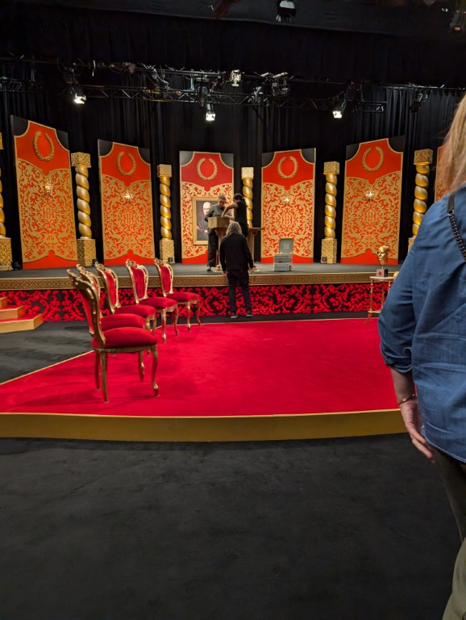

yo whats up gamers its another newsletter, im writing this on the 27th of september after having one (1) single schooner of cider with lunch and its hittin different, maybe because im in the office on a friday and i just wanna be at home on my couch watching more person of interest but who knows. anyway thats the intro what else, i bought a patagonia hat thats fun. Also mobile balatro released today and im playing it on my phone in the office and its 2pm and my phones at 43% im worried i have a show to go to tonight but i think its at like 8:45 so i might not need worry but also i cant help but worry thats just how the chemisrty of my brain ticks
Editors note from Sunday: the show at 8:45 was cancelled so there was nothing to worry about. Anyway I'm about to get drunk again but on sake so here's some photos
Another editors note: The sake festival had me drunk i bought multiple bottles anyway photos
There is a jaffle place near me and theyre so good but also the guy spent 5 mins talking about how he was going to buy some land and build 3 apartment blocks on them and i don't know if ill ever go back
I finally won at ipod solitare
Went go-karting for a friends bux where drama happened in a way that is hilarious but infuriating
Won solitaire again
and again
Went to a wedding, this was taken while i was very drunk (i took the open bar as a challenge) theres a good 15 or 20 mins of footage i took on the brides phone when i saw she left it on the table and i just walked up and spent a solid minute struggling to open the camera because of force touch or some shit and then just kept fliming things and peoples reactions when i went “this is the brides phone” were priceless. I am yet to see this footage yet but am excited to see it eventually.
Had a hungover sunday roast and it came in this huge yorkshire pudding
Saw this fun cd at an opshop which is now in my posession
Saw them film the new taskmaster australia and forgot how fucking long tv filmings go for.
My neighbours cat and i just stared at eachother for a minute while i was waiting for the kettle to boil, no idea what their name is but the vibe is inpecible
Went to the new gadigal metro station and made the looney tunes joke
Finally got a tv and it feels so pog to be able to sit on couch and watch tv, i watched something in 4k hdr and its so pretty
Sake gestial
I write this as I wait for a train and have just bought a tv (and ignored a call that turned out to be Harvey Norman trying to organise a delivery time, I only went with hn becuase they are supposed to give me some gift cards but I don't know if I will and I'm spitting anyway) and am now thinking. What movie do I Cristen a tv with? Do I go with an mission impossible? Do an dead reckoning rewatch? Do I ride the fallout coaster again? Do a full oceans trilogy god that would be fun. Or do I try something I've never seen before! Casino has been on my laptop's desktop forever what if it's good! It's three hours long that usually means something. Or what if I cristened it with something truly terrible. An attempt to try and get the bad deamons out of it.
Like 2019s drunk parents? No idea what it is but it's free on YouTube
Or what about an gentleman's favourite
Update from the 30th when im sick with a head cold, i watched mission impossible dead reckoning part 1 and had an absolute blast, when the guy was ontop of the train i took a pic like i was at a concert
Sunset Boulevard - I hate Andrew Lloyd Webber with a passion, the man just gives me a bad vibe. This show is also infamous for him being a cunt and promising the actress on the west end the role on Broadway but then stabbing her in the back and giving it to the actress doing it in la. The main actress in this is his ex wife who is some sorta legend but god damn is she not a good singer. Half the songs sounded like the joke of someone being an operah singer and sustaining a high note but also trying to hear the lyrics when there all that high is impossible. Also I could audibly hear her breathing in which was absolutely crazy. The one good song is the opening for act 2 where the guys like “yeah I'm the prey of a cougar now what of it”
Person of interest - I watched this show week to week back when it was on tv and it's just as good as I remember. At first a procedural where each week a number comes up and that person's either victim or purpotrator (it becomes fairly obvious early on) but then after a certain point t gets board of that and starts revealing its overarching plot and suddenly every EP is building up to something and it's so good
ZACHARY RUANE & ALEXEI TOLIOPOULOS - REFUSED CLASSIFICATION This was a crazy work in progress show that I adored, touched on why censorship is dangerous and why people should be willing to stand up to authority for the things they believe in and why Margarette from at the movies loved the fast and the furious movies
The Contestant - This is a doco about the japanese guy who was like living in a room for a year surviving only on what he could win from magazines and there was a moment at the end where he talks about going home and being worried that his mum would be dissapointed in him and it fully got me in tears because his mother was so nice anyway
English Teacher - This show took 2 eps to click with me, its cringe as all fuck but fucking hilarious and the guy is so unashamely gay and its also the guy from The Gay and Wondrous Life of Caleb Gallo and if you know that youll love this
I don't know what i meant about that but i dunno heres where my mh is at, id say like an 7? Its high but also some stuffs happened recently that felt like an ice pick to my happiness god thats deep why am i including this in here god its fucked anway love you all
I don't know if ive ever put a conclusion to this but fuck it, here it is. This month was busy with doing things with people which was lovely and october is also slated to be just as busy i'm going to bathurst then goin to the hunter then seeing 2 musicals then the clocks change as well and ive realised the back half of the month isnt busy wait a friend arrives on the 30th that counts! Also im scared that my work is organising an halloween party and that scares me more than anything
le end